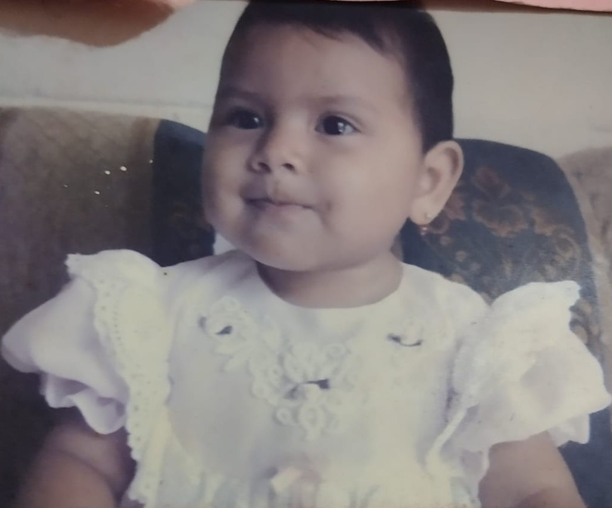
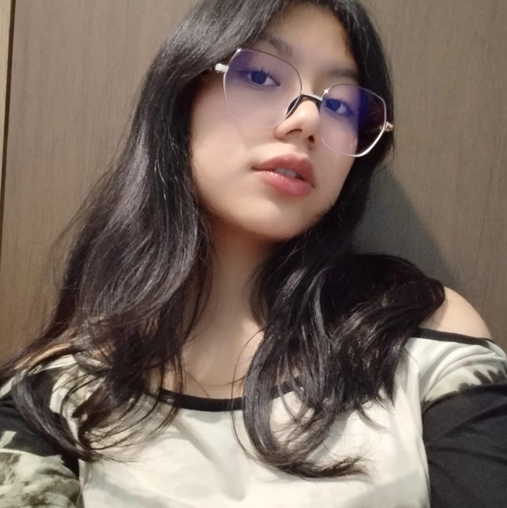

Biografía

Mi nombre es Jennifer Michelle Gerónimo Sánchez, nací el 25 de agosto del año 2007 en el IGSS de la zona 7 de la
ciudad de Guatemala. Actualmente tengo 18 años, y me encuentro en una etapa importante de mi vida, en la que
estoy construyendo mi identidad, mis metas y mi forma de ver el mundo.
Mi familia está conformada por mis padres Rodolfo Gerónimo y Haida Sánchez; y mis dos hermanos Bryan y Dylan.
Aunque vivimos lejos del resto de nuestros familiares y solo los visitamos ocasionalmente, considero que mi
núcleo familiar es agradable. Somos una familia reservada, pero con el paso del tiempo la comunicación y la
confianza entre nosotros han mejorado bastante. Mis padres siempre se han esforzado por brindarnos lo mejor a mí
y a mis hermanos; mi mamá trabaja constantemente para mantener el hogar y velar por nuestro bienestar, mientras
que mi papá se esfuerza día a día para darnos todo lo necesario con su trabajo. Gracias a ellos he aprendido el
valor del sacrificio, la responsabilidad y el amor incondicional.
Cursé mi etapa de preprimaria en una escuela cercana a mi casa. Posteriormente, realicé toda mi primaria y nivel
básico en un colegio llamado Belén del Milagro, institución a la que al inicio me costó adaptarme, pero con el
paso del tiempo logré desenvolverme mejor, destacarme como buena estudiante, hacer amistades y adquirir muchos
conocimientos. Actualmente curso mi nivel diversificado en el Instituto Emiliani Somascos, un establecimiento
que me ha brindado la oportunidad de desarrollarme en el área de computación, ampliando mis habilidades y
fortaleciendo mis intereses académicos.
Mi niñez fue una etapa muy bonita de mi vida, y uno de los recuerdos que más atesoro es la compañía de mi
hermano mayor, ya que gran parte de mi infancia la compartí con él. Solíamos pasar mucho tiempo juntos, y fue
una persona que me enseñó muchas cosas, tanto en lo personal como en lo emocional, además de influir en gustos e
intereses que hasta el día de hoy conservo. Recuerdo con mucho cariño el colegio donde cursé mi primaria y
básicos, ya que fue un lugar donde conocí amistades muy especiales, algunas de las cuales se convirtieron en
compañeras de vida y crecimos juntas. Aún conservo varias de esas amistades, lo cual valoro profundamente.
También tuve la oportunidad de conocer excelentes maestros, quienes en su mayoría me trataron con respeto,
paciencia y apoyo. Fueron personas que dejaron huella en mi vida, no solo por los conocimientos que me
brindaron, sino por sus valores, su forma de ser y su manera de motivarnos a ser mejores cada día.
Ese colegio es, sin duda, un lugar al que le tengo mucho aprecio, ya que guarda recuerdos importantes de mi
formación.
Recuerdo también los momentos en los que salía a jugar con mis amigos de la colonia. Aunque en
algunas ocasiones no salía con frecuencia debido a las responsabilidades escolares, las veces que lo hacía las
aprovechaba al máximo. Con el tiempo, muchas de esas amistades se fueron alejando, pero aún vivimos cerca y de
vez en cuando nos encontramos y nos saludamos, lo que me hace recordar con nostalgia esa etapa.

Actualmente soy una persona con pocos amigos realmente cercanos, y me siento cómoda con eso, ya que son personas
que me han acompañado a lo largo de mi vida y me han demostrado lo que significa una verdadera amistad. Algunas
de ellas incluso las considero parte de mi familia, porque han estado conmigo en momentos importantes y
difíciles.
Considero que hasta este punto de mi vida he cambiado mucho, tanto en lo físico como en lo mental, en mi forma
de ser y en mis conocimientos. A lo largo del tiempo he aprendido no solo sobre mí misma, sino también sobre mi
entorno y las personas que me rodean. He aprendido a ser mejor persona, a respetarme, a no permitir que otros
pasen sobre mí y a entender que ser diferente no es algo negativo. También he aprendido a amar, a caer y a
levantarme frente a cada reto que se me presenta.
Uno de los mayores aprendizajes que me deja esta etapa es que debemos disfrutar cada momento, por más simple que
parezca, ya que con el tiempo se convierte en un anhelo volver a vivirlo. He comprendido que no debo apresurar
el paso, que cada cosa llega a su tiempo y que la infancia y la adolescencia son etapas valiosas, a pesar de las
dificultades que puedan presentarse. También he aprendido la importancia de encontrarme a mí misma, de aceptarme
como soy y de entender que no es necesario seguir los estándares de los demás para encajar. Finalmente, he
aprendido a ser agradecida con la vida y, sobre todo, con mis padres, quienes luchan constantemente por
brindarnos lo mejor.
En el transcurso de estos tres años de carrera he aprendido que las cosas no son fáciles y que todo en la vida
lleva un proceso y esfuerzo. He comprendido que está bien caerse, pero que lo más importante es buscar la manera
de seguir adelante y no dejar las cosas a medias. También he aprendido que, aunque a veces se piense en
rendirse, no significa que deba hacerse. La vida presenta situaciones difíciles, sin embargo, he entendido que
todo forma parte del aprendizaje y que mantener una mentalidad positiva ayuda a creer que cada día puede ser
mejor.